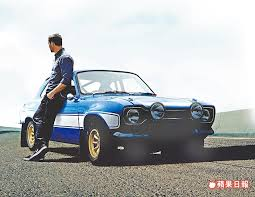

因賽車系列電影《玩命關頭》(The Fast and the Furious)走紅的好萊塢影星保羅沃克Paul Walker，
2013年12月1日在南加州發生車禍意外身亡的消息震驚全球。
如今這位飆風巨星的遺作《玩命關頭7》(Furious 7)將於4月1日正式上映，除了影迷們能再度於大銀幕上見到這位帥氣男星的最後身影外，
電影公司也希望保羅沃克陽光健康的形象將會以不一樣的方式繼續留在人們心中。
現在則跟著BeautiMode來回顧一下這位男星的迷人丰采吧！
將時光拉回至美國洛杉磯時間2013年11月30日，當時保羅沃克在南加州瓦倫西亞出席他的慈善機構Reach Out Worldwide
為菲律賓風災舉辦的慈善活動，
他搭乘友人羅傑羅德斯Roger Rodas駕駛的紅色保時捷，根據洛杉磯警方對意外事故調查研判，當時車速高達80至93mph，相當於128.75至149.67公里，
車子失控撞上燈柱和路樹後起火燃燒，保羅沃克與友人未能及時逃出，警方於下午約3點30分抵達，宣布兩人當場死亡。
1973年9月12日出生的保羅沃克，2歲時拍攝幫寶適廣告，12歲後參與了許多電視與電影演出，但直到2001年因演出《玩命關頭》中的臥底警察布萊恩Brian O'Conner才讓他真正一炮而紅，
《玩命關頭》系列電影15年來共推出了7部，擔任要角的保羅，便參與了其中6部，而不幸於《玩命關頭7》拍攝期間辭世的他，其後續戲份則改由兩位弟弟代打出演，之後再透過CG特效讓保羅沃克得以亮相於電影中。
保羅沃克戲裡飆車，戲外也是個十足的車迷，他不但參加「Redline Time Attack」賽車，也投資加州的Always Evolving車行，留下一名15歲的女兒梅朵瑞恩Meadow Rain。回憶起最愛的兒子，
保羅沃克的父親稱「海邊就像他的魔法王國，再來就是賽車。」在他眼中，保羅對一切抱持著無比的熱情，從不吝嗇表現自己陽光大男孩的一面。

雖然《玩命關頭7》成了保羅沃克從影的遺作，然而製片尼爾摩里茲Neal H. Moritz、馮迪索Vin Diesel、喬丹娜布魯斯特Jordana Brewster和蜜雪兒羅卓奎茲Michelle Rodriguez，
皆認為保羅的辭世儘管令他們心痛至極，但大家共同努力實現他未能完成的夢想，是對他現上最棒的敬意。
製作人尼爾摩里茲也回想起從第一集合作到本集的保羅，他說「好朋友也是好同事的保羅沃克，不幸離開人世，我們原本考慮停止拍攝《玩命關頭7》，過了好些日子，我們總算想通了，保羅會希望我們完成。
我和馮迪索談了談，我們決定為了保羅，無論付出多少心血也要把這部電影拍完。不管發生什麼事，我們都要堅持下去，但正因為保羅不在人世，我們更要代替他完成。
這是在向保羅沃克致敬，感謝他身為人、身為父親、身為朋友，我們所呈現的畫面，都是在捍衛保羅的尊嚴。」
他繼續說「接下來，我們要思考如何完成《玩命關頭7》，保羅拍完大部分的戲，但大家就是不知所措，還好前幾集有刪減的片段，只要再應用新科技，確實可以完成這部電影，給予他和他的角色完美的退場。
這部電影是他存在的證明。」馮迪索說到《玩命關頭7》的定位，他認為這必須是保羅的極致榮耀：「保羅就像我的兄弟一樣，《玩命關頭》大家庭的感情很好，這些角色願意為彼此賣命，
那份義氣相挺和家庭情誼不分戲裡戲外，任誰都可以在《玩命關頭7》，發現這個大家庭的存在。」
以家庭為核心的《玩命關頭》系列，在本集中更能感受出這樣的氛圍，導演溫子仁不僅在片尾打上「For Paul」的字樣，在劇情安排上更是會讓觀眾們流下感動淚水，
至於會以怎樣的方式呈現，且有待影迷們親自進戲院找答案！